Function approximation¶
Taylor series (taylor)¶
- mpmath.calculus.taylor(f, x, n, **options)¶
Produces a degree-
 Taylor polynomial around the point 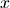 of the
given function 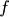. The coefficients are returned as a list.
Taylor polynomial around the point 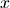 of the
given function 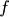. The coefficients are returned as a list.>>> from mpmath import * >>> mp.dps = 15; mp.pretty = True >>> nprint(chop(taylor(sin, 0, 5))) [0.0, 1.0, 0.0, -0.166667, 0.0, 8.33333e-3]
The coefficients are computed using high-order numerical differentiation. The function must be possible to evaluate to arbitrary precision. See diff() for additional details and supported keyword options.
Note that to evaluate the Taylor polynomial as an approximation of , e.g. with polyval(), the coefficients must be reversed, and the point of the Taylor expansion must be subtracted from the argument:
>>> p = taylor(exp, 2.0, 10) >>> polyval(p[::-1], 2.5 - 2.0) 12.1824939606092 >>> exp(2.5) 12.1824939607035
Pade approximation (pade)¶
- mpmath.calculus.pade(a, L, M)¶
Computes a Pade approximation of degree
 to a function.
Given at least 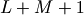 Taylor coefficients 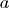 approximating
a function 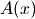, pade() returns coefficients of
polynomials 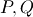 satisfying
to a function.
Given at least 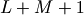 Taylor coefficients 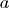 approximating
a function 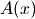, pade() returns coefficients of
polynomials 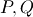 satisfying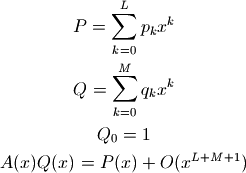
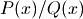 can provide a good approximation to an analytic function beyond the radius of convergence of its Taylor series (example from G.A. Baker ‘Essentials of Pade Approximants’ Academic Press, Ch.1A):
>>> from mpmath import * >>> mp.dps = 15; mp.pretty = True >>> one = mpf(1) >>> def f(x): ... return sqrt((one + 2*x)/(one + x)) ... >>> a = taylor(f, 0, 6) >>> p, q = pade(a, 3, 3) >>> x = 10 >>> polyval(p[::-1], x)/polyval(q[::-1], x) 1.38169105566806 >>> f(x) 1.38169855941551
Chebyshev approximation (chebyfit)¶
- mpmath.calculus.chebyfit(f, interval, N, error=False)¶
Computes a polynomial of degree 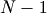 that approximates the given function on the interval 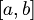. With error=True, chebyfit() also returns an accurate estimate of the maximum absolute error; that is, the maximum value of 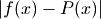 for 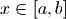.
chebyfit() uses the Chebyshev approximation formula, which gives a nearly optimal solution: that is, the maximum error of the approximating polynomial is very close to the smallest possible for any polynomial of the same degree.
Chebyshev approximation is very useful if one needs repeated evaluation of an expensive function, such as function defined implicitly by an integral or a differential equation. (For example, it could be used to turn a slow mpmath function into a fast machine-precision version of the same.)
Examples
Here we use chebyfit() to generate a low-degree approximation of 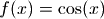, valid on the interval 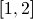:
>>> from mpmath import * >>> mp.dps = 15; mp.pretty = True >>> poly, err = chebyfit(cos, [1, 2], 5, error=True) >>> nprint(poly) [2.91682e-3, 0.146166, -0.732491, 0.174141, 0.949553] >>> nprint(err, 12) 1.61351758081e-5
The polynomial can be evaluated using polyval:
>>> nprint(polyval(poly, 1.6), 12) -0.0291858904138 >>> nprint(cos(1.6), 12) -0.0291995223013
Sampling the true error at 1000 points shows that the error estimate generated by chebyfit is remarkably good:
>>> error = lambda x: abs(cos(x) - polyval(poly, x)) >>> nprint(max([error(1+n/1000.) for n in range(1000)]), 12) 1.61349954245e-5
Choice of degree
The degree 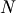 can be set arbitrarily high, to obtain an arbitrarily good approximation. As a rule of thumb, an -term Chebyshev approximation is good to 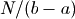 decimal places on a unit interval (although this depends on how well-behaved is). The cost grows accordingly: chebyfit evaluates the function 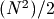 times to compute the coefficients and an additional times to estimate the error.
Possible issues
One should be careful to use a sufficiently high working precision both when calling chebyfit and when evaluating the resulting polynomial, as the polynomial is sometimes ill-conditioned. It is for example difficult to reach 15-digit accuracy when evaluating the polynomial using machine precision floats, no matter the theoretical accuracy of the polynomial. (The option to return the coefficients in Chebyshev form should be made available in the future.)
It is important to note the Chebyshev approximation works poorly if is not smooth. A function containing singularities, rapid oscillation, etc can be approximated more effectively by multiplying it by a weight function that cancels out the nonsmooth features, or by dividing the interval into several segments.
Fourier series (fourier, fourierval)¶
- mpmath.calculus.fourier(f, interval, N)¶
Computes the Fourier series of degree of the given function on the interval . More precisely, fourier() returns two lists 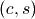 of coefficients (the cosine series and sine series, respectively), such that
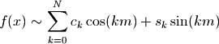
where 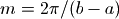.
Note that many texts define the first coefficient as 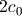 instead of 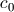. The easiest way to evaluate the computed series correctly is to pass it to fourierval().
Examples
The function 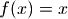 has a simple Fourier series on the standard interval 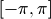. The cosine coefficients are all zero (because the function has odd symmetry), and the sine coefficients are rational numbers:
>>> from mpmath import * >>> mp.dps = 15; mp.pretty = True >>> c, s = fourier(lambda x: x, [-pi, pi], 5) >>> nprint(c) [0.0, 0.0, 0.0, 0.0, 0.0, 0.0] >>> nprint(s) [0.0, 2.0, -1.0, 0.666667, -0.5, 0.4]
This computes a Fourier series of a nonsymmetric function on a nonstandard interval:
>>> I = [-1, 1.5] >>> f = lambda x: x**2 - 4*x + 1 >>> cs = fourier(f, I, 4) >>> nprint(cs[0]) [0.583333, 1.12479, -1.27552, 0.904708, -0.441296] >>> nprint(cs[1]) [0.0, -2.6255, 0.580905, 0.219974, -0.540057]
It is instructive to plot a function along with its truncated Fourier series:
>>> plot([f, lambda x: fourierval(cs, I, x)], I) #doctest: +SKIP
Fourier series generally converge slowly (and may not converge pointwise). For example, if 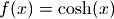, a 10-term Fourier series gives an 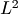 error corresponding to 2-digit accuracy:
>>> I = [-1, 1] >>> cs = fourier(cosh, I, 9) >>> g = lambda x: (cosh(x) - fourierval(cs, I, x))**2 >>> nprint(sqrt(quad(g, I))) 4.67963e-3
fourier() uses numerical quadrature. For nonsmooth functions, the accuracy (and speed) can be improved by including all singular points in the interval specification:
>>> nprint(fourier(abs, [-1, 1], 0), 10) ([0.5000441648], [0.0]) >>> nprint(fourier(abs, [-1, 0, 1], 0), 10) ([0.5], [0.0])
- mpmath.calculus.fourierval(series, interval, x)¶
Evaluates a Fourier series (in the format computed by by fourier() for the given interval) at the point .
The series should be a pair where 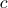 is the cosine series and 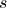 is the sine series. The two lists need not have the same length.